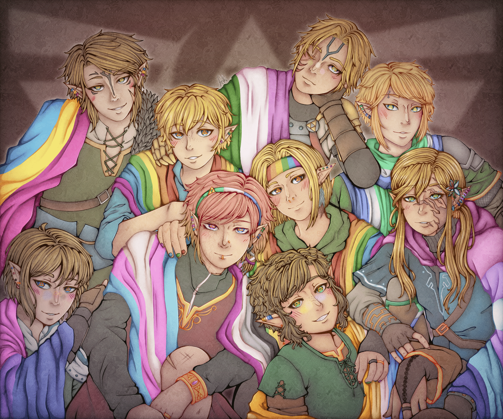
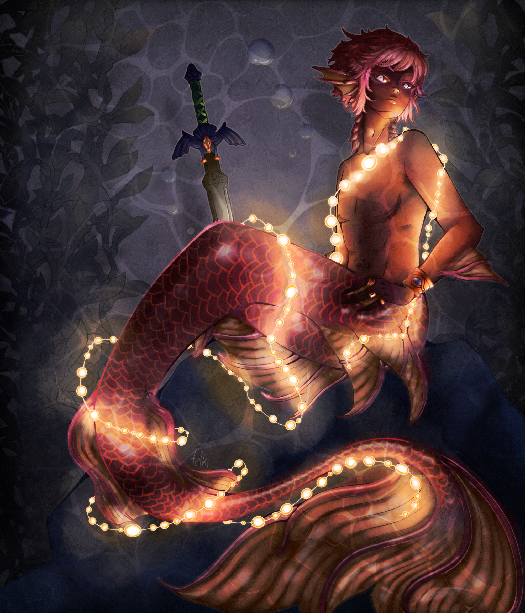
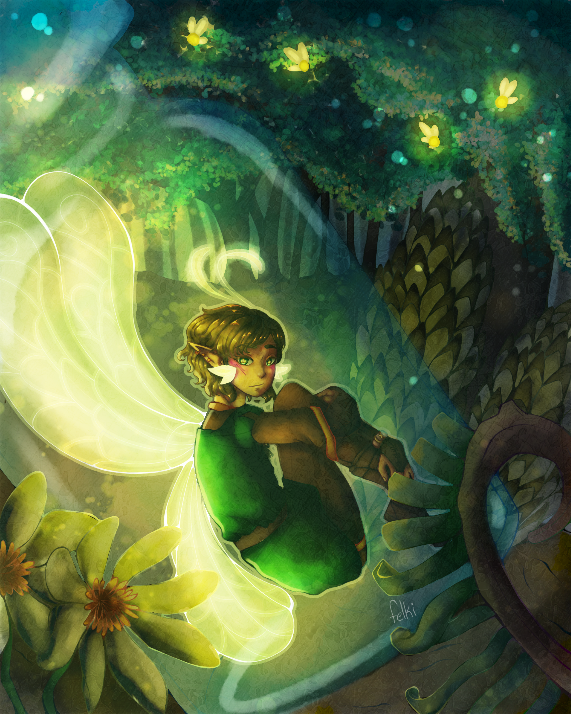

☂︎Fanart

Most of my finished illustrations recently have been fanart. So this is a couple of my recent (and by
this I mean 2 years old) Zelda fanart. The one above I drew for Pride 2024.
(I need to get
back into finishing illustrations.)
The illustrations below are ones I made for my series of "the different links from different games as mythical creatures" series. Currently I have the link from A Link to the Past as a Mermaid, and the Link from the original LOZ as a fairy.
(You may notice that the signatures on these particular pieces say 'felki' rather than Amamiya Toya. Felki is my fandom handle.)

